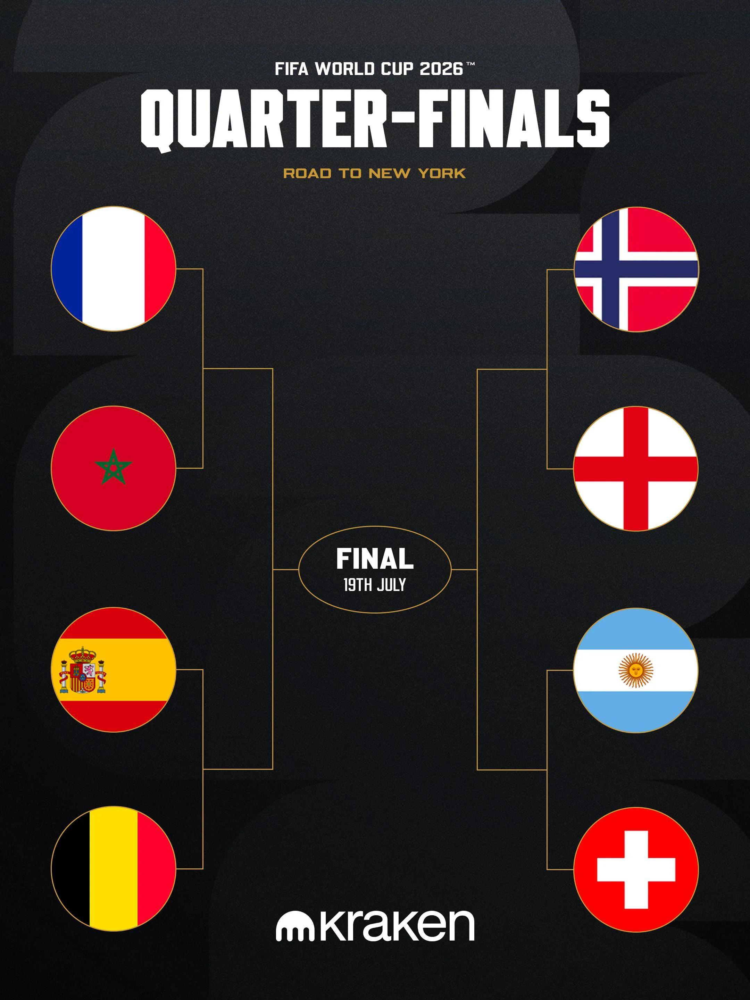
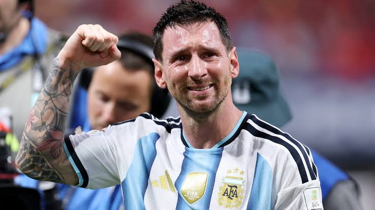
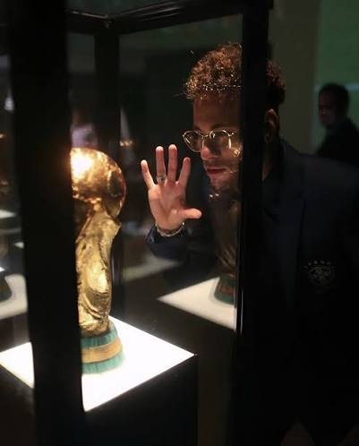
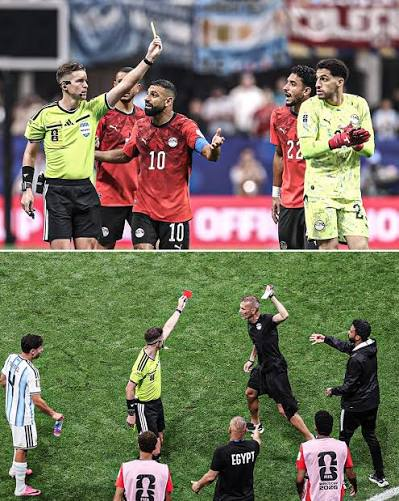
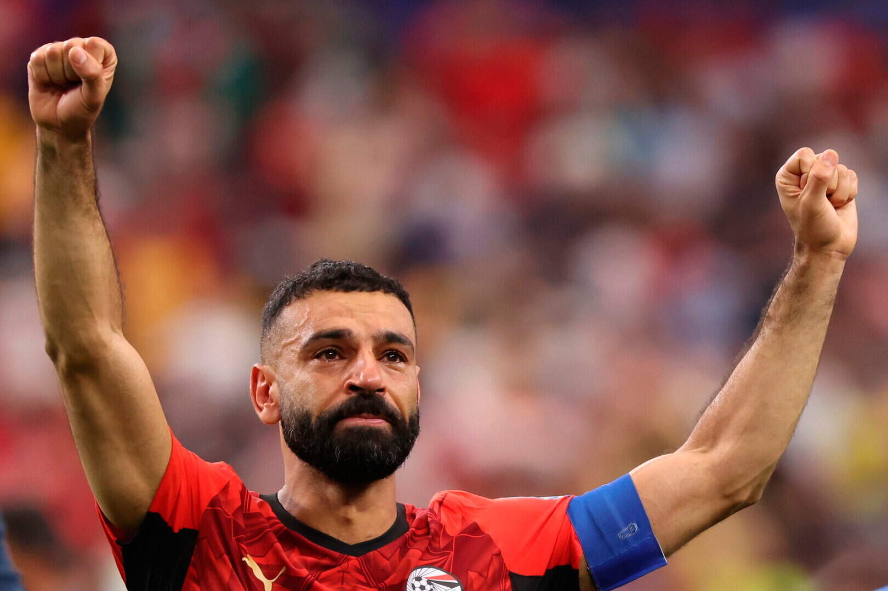

The Final Eight.
If Week 4 of the 2026 World Cup taught us anything, it’s this: nobody is leaving quietly. The knockout rounds have arrived, the pressure is sky-high, and apparently the safest lead in football is still not safe enough.
The quarter-final lineup is now set: France, Morocco, Spain, Belgium, Norway, England, Argentina, and Switzerland.

🎵 Song of the Week
This week’s pick: It Ain't Over 'Til It's Over — Lenny Kravitz
Dedicated to the teams who refused to go quietly — the ones who kept swinging, kept believing, and kept turning “game over” into “not just yet.”
🐐 Can he be stopped?

There will never be another Lionel Messi. Rear your heads, hatewatchers. When his country needed him, he saved the day. Who else can miss a pen but still write this much history? The most assists ever in the World Cup. Scored in nine straight World Cup matches. Call him Thanos the way he changed this game with a click of his fingers. Most dribbles. Most chances created. Ended Egypt's reign like Alexander the Great. His status as the greatest was already confirmed, but this is how you separate the sheep from the GOATs. The little boy from Rosario really aged like some fine mate.
Could he complete the double?
Norway 2–1 Brazil

Norway produced one of the biggest upsets of the knockout round by beating Brazil 2–1 and reaching the World Cup quarter-finals for the first time ever. The star of the night was Erling Haaland, who scored both goals and turned a huge occasion into his personal highlight reel.
Brazil had a golden chance to take control early on, but Bruno Guimarães missed a penalty, and that miss came back to haunt them. Norway stayed composed, Haaland stayed lethal, and Brazil never fully recovered.
Neymar scored late to give Brazil a sliver of hope, but it was too little, too late. By the end, Norway had the result of their lives, and Brazil had another World Cup collapse to explain.

To make the night even more dramatic, reports after the match said Neymar had announced his international retirement, adding an emotional final chapter to a stunning elimination.
Argentina: just when you think they’re done…
Argentina 3–2 Egypt

Argentina spent most of this match looking like a team that had accidentally wandered into its own elimination. Egypt raced into a 2–0 lead through Yasser Ibrahim and Mostafa Zico, while Lionel Messi missed a penalty and the defending champions looked uncomfortably close to an early exit.
Then, because football enjoys chaos, Argentina came storming back. Cristian Romero scored, Messi found the equalizer, and Enzo Fernandez completed the comeback in stoppage time. One minute Egypt were dreaming of a historic upset; the next, Argentina were celebrating like they had discovered immortality.
England at the Azteca: calm is overrated
England 3–2 Mexico

England’s match with Mexico had a little bit of everything, if by “a little bit” we mean “far too much for anyone’s blood pressure.”
The game was delayed by an hour because of severe weather. Then Jude Bellingham scored twice in 98 seconds, because subtlety is not really his thing right now. England went from cruising to clinging on after Jarell Quansah was sent off early in the second half, and Harry Kane added a penalty that turned out to be absolutely necessary. Mexico kept coming, the Azteca kept roaring, and England somehow escaped with a 3–2 win.
The Last Dance.

Ronaldo’s last World Cup ended with a dagger in stoppage time
This was the sad blockbuster. Spain beat Portugal 1–0 thanks to a 91st-minute goal by Mikel Merino, ending Cristiano Ronaldo’s World Cup career.
This was a sad sight. One of the greats gone just like that.
Stars Doing Star Things
- Jude Bellingham — Two goals in under two minutes and one of the standout performances of the week.
- Erling Haaland vs Harry Kane — Norway vs England is basically football’s version of a heavyweight title fight.
- Kylian Mbappé — France remain one of the strongest teams left, and Mbappé is still a major threat.
Storylines Nobody Can Ignore
- Morocco are done being “the surprise team” — They are in the quarter-finals and carrying serious momentum.
- Spain have apparently banned conceding. — Their defense has been one of the stories of the tournament.
- The Dark Horses. — We called it. Norway are here to stay. That Haaland guy scared Brazil into not defending.
- Every quarter-final feels huge — There are no easy games left.
Looking Ahead
The quarter-finals are here, and the margin for error is gone. One bad pass, one missed chance, one moment of magic, and everything changes.
- France vs Morocco
- Spain vs Belgium
- Norway vs England
- Argentina vs Switzerland
🔦 Nation Spotlight: Egypt

Famous Footballer: Mohamed Salah
National Dish: Koshari — a legendary mix of rice, pasta, lentils, chickpeas, tomato sauce, and crispy onions.
Weird Fact: Egypt is home to the only remaining ancient wonder of the world still standing: the Great Pyramid of Giza.
Spirit of Choice: Araqi — a traditional anise-flavoured spirit. Smooth in theory, dangerous in practice.
World Cup Chances: ⬛⬛⬛⬛⬛
Egypt gave this tournament one of its most dramatic nights and came painfully close to a huge upset. For a while, it looked like they were sending Argentina home. Instead, they left with heartbreak, controversy, and a performance that deserved a better ending.
🏝️ The Fire Pit
Love Island this week came down to three things: Sean and Lola cracking under the Julia drama, Jasmine and Lorenzo being blown up by Movie Night’s “The Affair” clip, and viewer backlash getting so intense it spilled into Ofcom complaints.
Julia reopened the Casa Amor mess by questioning whether Sean and Lola would last outside, which kicked off another villa argument. Lola told Sean not to speak to Julia because she didn’t want to give her the reaction she wanted, but Sean spoke to her anyway to try to keep things civil. The bigger issue was not Julia — it was that Sean and Lola handled the conflict completely differently, which made their couple suddenly look shaky.
Jasmine and Lorenzo
Movie Night turned Jasmine and Lorenzo’s flirtation into the week’s biggest scandal with a clip titled “The Affair.” It pushed Kavan and the rest of the villa to treat their connection like a secret romance, even though it looked more like emotional overlap and classic Love Island producer amplification than a literal affair. Jasmine had a rough week emotionally, while Lorenzo picked up a lot of fan sympathy.
Ofcom and backlash
The public reaction was huge. Reports say Ofcom received 533 complaints between July 2 and July 6, covering alleged bias toward Jasmine, alleged bullying of Priya, and alleged bullying by Lola toward Julia. That doesn’t mean the complaints were upheld, but it shows how heated the audience reaction has become.
Other key bits
- Charleen was dumped after Kavan got back with Jasmine.
- Priya also had another painful week as Movie Night exposed more dishonesty around her.
🧠 Trivia
- Which team will England play in the quarter-finals after beating Mexico?
- I scored France's winner against Paraguay. Who Am I?
- What is the name of Charleen Murphy's podcast?
- What did Julia say to Lola when swearing at her as Gaeilge? *(Correct spelling and use of diacritics required!)*
Submit your answers here.
We have upset some team members due to our wording... here is a full rules & regulations just for them!
Please answer with integrity, honesty, and without immediately asking ChatPwC. Difficult, we know.
⏱️ Full-Time Whistle
Week 4 gave us exactly what knockout football is supposed to give us: stress, brilliance, noise, drama, and several fan bases reconsidering their relationship with the sport. Argentina pulled off a comeback for the ages, England survived the Azteca, Morocco kept rolling, and Spain kept slamming the door shut. The World Cup is down to eight, and absolutely nobody is relaxed.

Send feedback here.